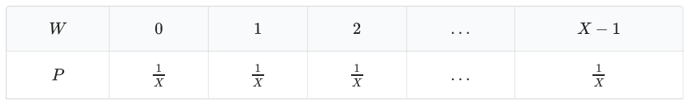

小 Q 同学是一个热爱学习的人，但是他最近沉迷于各种游戏，龙与地下城就是其中之一。 在这个游戏中，很多场合需要通过掷骰子来产生随机数，并由此决定角色未来的命运，因此骰子堪称该游戏的标志性道具。
骰子也分为许多种类，比如 $4$ 面骰、$6$ 面骰、$8$ 面骰、$12$ 面骰、$20$ 面骰，其中 $20$ 面骰用到的机会非常多。当然，现在科技发达，可以用一个随机数生成器来取代真实的骰子，所以这里认为骰子就是一个随机数生成器。
在战斗中，骰子主要用来决定角色的攻击是否命中，以及命中后造成的伤害值。举个例子，假设现在已经确定能够命中敌人，那么 $YdX$（也就是掷出 $Y$ 个 $X$ 面骰子之后所有骰子显示的数字之和）就是对敌人的基础伤害。在敌人没有防御的情况下，这个基础伤害就是真实伤害。
众所周知，骰子显示每个数的概率应该是相等的，也就是说，对于一个 $X$ 面骰子，显示 $0,1,2,\dots,X-1$ 中每一个数字的概率都是 $\frac 1 X$。
更形式地说，这个骰子显示的数$W$满足离散的均匀分布，其分布列为

除此之外还有一些性质
$W$的一阶原点矩（期望）为
$v_1(W) = E(W) = \sum ^{X-1} _{i=0} iP(W=i) = \frac{X-1}{2}$
$W$的二阶中心矩（方差）为
$\mu_2(W) = E((W-E(W))^2) = \sum ^{X-1}_{i=0}(i-E(W))^2P(W=i) = \frac{X^2-1}{12}$
言归正传，现在小 Q 同学面对着一个生命值为$A$的没有防御的敌人，能够发动一次必中的 $YdX$ 攻击，显然只有造成的伤害不少于敌人的生命值才能打倒敌人。但是另一方面，小 Q 同学作为强迫症患者，不希望出现 overkill，也就是造成的伤害大于 $B$ 的情况，因此只有在打倒敌人并且不发生 overkill 的情况下小 Q 同学才会认为取得了属于他的胜利。
因为小 Q 同学非常谨慎，他会进行 $10$ 次模拟战，每次给出敌人的生命值 $A$ 以及 overkill 的标准 $B$，他想知道此时取得属于他的胜利的概率是多少，你能帮帮他吗？
 Comet OJ
Comet OJ